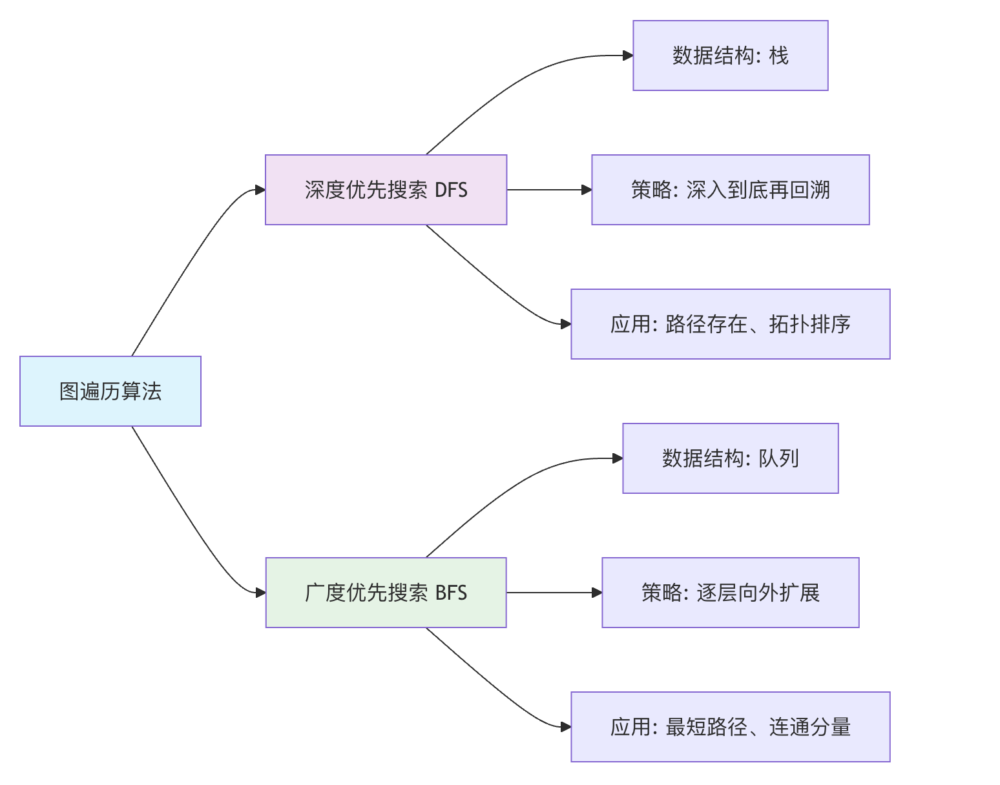

Estructura de teoría de grafos
En ciencias de la computación, los grafos se utilizan ampliamente para modelar redes sociales (los usuarios son puntos, las relaciones de amistad son líneas), enlaces web (las páginas web son puntos, los hipervínculos son líneas), redes de comunicación e incluso problemas de planificación de rutas.
图Es como un diagrama de relaciones de redes sociales:
- Nodo (vértice): cada persona en la red social
- 边: las relaciones entre personas (amistad, seguimiento, etc.)
- Peso: la intensidad de la relación (cercanía, frecuencia de interacción, etc.)
Imagina la red de transporte de tu ciudad: cada lugar (como casa, escuela, centro comercial) es点, las carreteras que conectan estos lugares son线. El grafo (Graph) es la abstracción matemática de esta relación de puntos y líneas, y se utiliza para representarrelaciones complejas entre entidadesuna estructura de datos.
Casos de la vida real:
- Mapa: las ciudades son nodos, las carreteras son aristas, la distancia es el peso
- Circuito eléctrico: los componentes son nodos, los cables son aristas, la resistencia es el peso
- Internet: los sitios web son nodos, los enlaces son aristas, el tráfico es el peso
- Red de transporte: las estaciones son nodos, las líneas son aristas, la tarifa es el peso
| Escenario | Otras estructuras | Estructura de grafo |
|---|---|---|
| Relaciones sociales | Difícil de expresar relaciones complejas | Expresa naturalmente relaciones de muchos a muchos |
| Planificación de rutas | Requiere estructuras de datos complejas | Representa intuitivamente redes y rutas |
| Relaciones de dependencia | Difícil de representar dependencias cíclicas | Maneja fácilmente dependencias complejas |
| Análisis de redes | No puede expresar la topología de red | Describe perfectamente la estructura de la red |
Términos básicos de grafos
| Término | Definición | Analogía cotidiana | Notación simbólica |
|---|---|---|---|
| Vértice (Vertex) | Unidad básica en un grafo | Personas en una red social | V, u, v |
| Arista (Edge) | Línea que conecta dos vértices | Relación entre dos personas | E, (u,v) |
| Grado (Degree) | Número de aristas conectadas a un vértice | Número de amigos de una persona | deg(v) |
| Camino (Path) | Secuencia de vértices | Ruta de A a B | v₁→v₂→…→vₙ |
| Ciclo (Cycle) | Camino cuyo inicio y fin son el mismo | Salir de casa y finalmente volver a casa | v₁→v₂→…→v₁ |
| Grafo conexo | Hay un camino entre cualquier par de vértices | Todos pueden contactarse entre sí | |
| Peso (Weight) | Atributo numérico de una arista | Distancia entre dos ciudades | w(u,v) |
Clasificación de grafos

| Criterio de clasificación | Tipo | Características | Escenarios de aplicación |
|---|---|---|---|
| Direccionalidad | Grafo no dirigido | Las aristas no tienen dirección | Relaciones de amistad, redes de carreteras |
| Grafo dirigido | Las aristas tienen dirección | Relaciones de seguimiento, flujos de trabajo | |
| Peso | Grafo no ponderado | Todas las aristas tienen el mismo peso | Relaciones en redes sociales |
| Grafo ponderado | Las aristas tienen diferentes pesos | Distancias en mapas, tráfico de red | |
| Conectividad | Grafo conexo | Cualquier par de vértices es alcanzable | Red de transporte |
| Grafo no conexo | Existen vértices aislados | Grupos sociales | |
| 环 | Grafo acíclico | No tiene ciclos | Dependencias de tareas, árbol genealógico |
| Grafo cíclico | Contiene ciclos | Red de carreteras |
Métodos de representación de grafos
Matriz de adyacencia
| Propiedad | Descripción | Complejidad temporal | Complejidad espacial |
|---|---|---|---|
| Método de almacenamiento | Matriz bidimensional | ||
| Verificar si existe una arista | matrix[i][j] != 0 |
O(1) | |
| Agregar una arista | matrix[i][j] = weight |
O(1) | |
| Eliminar una arista | matrix[i][j] = 0 |
O(1) | |
| Recorrer los vértices adyacentes | Escanear una fila/columna | O(V) | |
| Ocupación de espacio | Matriz V×V | O(V²) |
Lista de adyacencia
| Propiedad | Descripción | Complejidad temporal | Complejidad espacial |
|---|---|---|---|
| Método de almacenamiento | Arreglo + lista enlazada | ||
| Verificar si existe una arista | Buscar en la lista enlazada | O(deg(v)) | |
| Agregar una arista | Agregar en la lista enlazada | O(1) | |
| Eliminar una arista | Eliminar en la lista enlazada | O(deg(v)) | |
| Recorrer los vértices adyacentes | Recorrer la lista enlazada | O(deg(v)) | |
| Ocupación de espacio | Arreglo de vértices + lista enlazada de aristas | O(V+E) |
Conceptos básicos de grafos
Un grafoGse compone de dos conjuntos:
- Conjunto de vértices V (Vertex Set): el conjunto de todos los puntos en el grafo.
- Conjunto de aristas E (Edge Set): el conjunto de líneas que conectan estos puntos. Una arista se representa por los dos vértices
(u, v)que conecta.
Ejemplo
# Vértices: Alice, Bob, Charlie, Diana
# Aristas: representan las relaciones de amistad entre ellos
social_graph = {
'Alice': ['Bob', 'Charlie'], # Alice es amiga de Bob y Charlie
'Bob': ['Alice', 'Charlie', 'Diana'],
'Charlie': ['Alice', 'Bob'],
'Diana': ['Bob']
}
print(fVértices (usuarios): {list(social_graph.keys())})
print(fAmigos de Alice (aristas): {social_graph['Alice']})
Salida:
顶点（用户）: ['Alice', 'Bob', 'Charlie', 'Diana'] Alice 的好友（边）: ['Bob', 'Charlie']
Clasificación de grafos y conceptos importantes
Los grafos se pueden clasificar en varios tipos según las características de sus aristas; comprender esto es la base para dominar la teoría de grafos.
Grafo no dirigido vs grafo dirigido
| Tipo | Características de la arista (Edge) | Analogía cotidiana | Ejemplo |
|---|---|---|---|
| Grafo no dirigido | Las aristas no tienen dirección,(A, B)lo que significa que A y B están conectados mutuamente. |
Amistad bidireccional: si Alice es amiga de Bob, entonces Bob también es amigo de Alice. | Relaciones de amistad en redes sociales, conexiones en circuitos. |
| Grafo dirigido | Las aristas tienen dirección,A -> Blo que indica una conexión unidireccional de A a B. |
Seguimiento en Weibo: puedes seguir a alguien, pero esa persona no necesariamente te sigue a ti. | Hipervínculos web, dependencias de tareas, calles de sentido único. |

Grafo ponderado
En un grafo ponderado, cada arista recibe un valor numérico (peso) que puede representar distancia, costo, tiempo o intensidad de la relación.
Ejemplo
weighted_graph = {
'Pekín': {('Shanghái', 1200), ('Tianjin', 100)}, # Distancia de Pekín a Shanghái 1200, a Tianjin 100
'Shanghái': {('Pekín', 1200), ('Hangzhou', 200)},
'Tianjin': {('Pekín', 100)},
'Hangzhou': {('Shanghái', 200)}
}
Términos clave
- Grado (Degree): el número de aristas conectadas a un vértice. En un grafo dirigido, se divide engrado de entrada(número de aristas que apuntan al vértice) ygrado de salida(número de aristas que salen del vértice).
- Camino (Path): Secuencia de aristas que se recorre de un vértice a otro. Por ejemplo,
A -> B -> C。 - Ciclo (Cycle): Camino cuyo punto de inicio y punto final son el mismo vértice.
- Grafo conexo (Connected Graph): En un grafo no dirigido, existe un camino entre cualquier par de vértices.
- Grafo fuertemente conexo (Strongly Connected Graph): En un grafo dirigido, entre cualquier par de vértices existeen ambos sentidosun camino.
Métodos de almacenamiento de grafos
¿Cómo representar un grafo en una computadora? Hay dos métodos principales.
Matriz de adyacencia
Usar un arreglo bidimensional (matriz)matrixpara representar el grafo.matrix[i][j]El valor de ... representa el vérticeial vérticejel estado de la arista.
- Para un grafo no dirigido, la matriz es simétrica.
- Para un grafo ponderado, el valor de la matriz almacena el peso (usando un valor especial como
0或∞para representar la ausencia de arista). - Ventajas: verificar si existe una arista entre dos vértices cualesquiera es muy rápido (
O(1)）。 - Desventajas: ocupa mucho espacio (
O(V^2)), y desperdicia espacio en los "grafos dispersos" con pocas aristas.
Ejemplo
# Vértices: 0-A, 1-B, 2-C
# Aristas: A-B, A-C
V = 3 # Número de vértices
adj_matrix = [[0] * V for _ in range(V)]
# Añadir arista A-B (0-1)
adj_matrix[0][1] = 1
adj_matrix[1][0] = 1 # En un grafo no dirigido, hay que establecer la posición simétrica
# Añadir arista A-C (0-2)
adj_matrix[0][2] = 1
adj_matrix[2][0] = 1
print("Matriz de adyacencia:")
for row in adj_matrix:
print(row)
# Salida:
# [0, 1, 1]
# [1, 0, 0]
# [1, 0, 0]
Lista de adyacencia
Mantener una lista (lista enlazada, arreglo, etc.) para cada vértice, registrando todos los vértices (y pesos) conectados directamente a él.
- Ventajas: alta eficiencia de espacio (
O(V + E)), especialmente adecuada para grafos dispersos. Permite encontrar rápidamente todos los vecinos de un vértice. - Desventajas: comprobar si existe una arista entre dos vértices cualesquiera es más lento (
O(degree(V))）。
Ejemplo
adj_list = {
'A': ['B', 'C'], # A está conectado a B y C
'B': ['A'], # B está conectado a A
'C': ['A'] # C está conectado a A
}
print("Lista de adyacencia:")
for vertex, neighbors in adj_list.items():
print(f"{vertex}: {neighbors}")
Algoritmos de recorrido de grafos
El recorrido es la base de los algoritmos de grafos; significa visitar sistemáticamente cada vértice del grafo.
Principalmente hay dos estrategias:
Búsqueda en anchura
La búsqueda en anchura (BFS) es como la "propagación de ondas en el agua": desde el punto de partida, primero visita todos los vecinos directos, luego los vecinos de los vecinos, y así sucesivamente. Usauna colapara implementarlo.
Pasos del algoritmo：
- Colocar el punto de partida en la cola y marcarlo como visitado.
- Cuando la cola no esté vacía:
va. Extraer el vértice del frente de la cola.vb. Visitar - todos los vecinos no visitados de este vértice, ponerlos en la cola y marcarlos como visitados.
Ejemplo
def bfs(graph, start):
"""Recorrer el grafo usando BFS y devolver el orden de visita"""
visited = set([start]) # Registrar los vértices visitados
queue = deque([start]) # Inicializar la cola
result = [] # Almacenar el orden de visita
while queue:
vertex = queue.popleft()
result.append(vertex)
# Recorrer los vecinos del vértice actual
for neighbor in graph[vertex]:
if neighbor not in visited:
visited.add(neighbor)
queue.append(neighbor)
return result
# Datos de prueba
test_graph = {
'A': ['B', 'C'],
'B': ['A', 'D', 'E'],
'C': ['A', 'F'],
'D': ['B'],
'E': ['B', 'F'],
'F': ['C', 'E']
}
print("Orden de recorrido BFS (comenzando desde A):", bfs(test_graph, 'A'))
# La salida podría ser: ['A', 'B', 'C', 'D', 'E', 'F']
Búsqueda en profundidad
La búsqueda en profundidad (DFS) es como "recorrer un laberinto": se elige un camino hasta el final, luego se retrocede y se toma otro camino. Usa栈(o recursión) para implementarlo.
Pasos del algoritmo recursivo：
- Desde el vértice
vinicial, marcarlo como visitado. - Para
vcada vecino no visitado de vu:DFS(u)。
Ejemplo
"""Implementar DFS usando recursión"""
if visited is None:
visited = set()
if result is None:
result = []
visited.add(vertex)
result.append(vertex)
for neighbor in graph[vertex]:
if neighbor not in visited:
dfs_recursive(graph, neighbor, visited, result)
return result
print("Orden de recorrido DFS (comenzando desde A):", dfs_recursive(test_graph, 'A'))
# La salida podría ser: ['A', 'B', 'D', 'E', 'F', 'C']
Comparación de algoritmos de recorrido de grafos:

Escenarios de aplicación clásicos e introducción a los algoritmos
Una vez que domines la representación y el recorrido de grafos, podrás explorar muchos problemas clásicos:
Problema del camino más corto: en la navegación por mapas, encontrar la distancia de viaje más corta entre dos puntos.
- Algoritmo de Dijkstra: adecuado parapesos no negativosen grafos.
- Algoritmo de Floyd: calcula el camino más corto entre todos los pares de vértices.
Árbol de recubrimiento mínimo: eligiendo el conjunto de aristas con el peso total mínimo, garantizando que todos los vértices estén conectados (por ejemplo, tender una red de fibra óptica de costo mínimo para varios pueblos).
- Algoritmo de Prim
- Algoritmo de Kruskal
Ordenamiento topológico: ordenar linealmente los vértices de un grafo acíclico dirigido (DAG), de modo que para cualquier arista dirigida
u->v，uen la ordenación, se coloquevantes
Haz clic para compartir notas
<p style="font-size:14px;">¡Las notas deben ser una extensión del contenido de este artículo!</p><br> <p style="font-size:12px;"><a href="../tougao.html" target="_blank">Envío de artículos, haz clic aquí</a></p> <p style="font-size:14px;"><a href="../w3cnote/runoob-user-test-intro.html" target="_blank">Cómo obtener el código de invitación de registro</a></p> <h3 class="text-muted"><i class="fa fa-info-circle" aria-hidden="true"></i> Antes de compartir notas debes <a href=";.html" class="runoob-pop">iniciar sesión</a>!</h3> <p><a href="../w3cnote/runoob-user-test-intro.html" target="_blank">Cómo obtener el código de invitación de registro</a></p>